Introduction
This post is about exploring some fundamental concepts in Digital Signal Processing (DSP) and Digital Sound Synthesis by using a program called Max, a visual programming language.
Computer Music Book

One of the authors of Computer Music, Charles Dodge, was active in computer music composition when it became a new field. In the 1960s, he was at Columbia and Princeton working on an IBM mainframe computer for his early work, but had to go to Bell Labs to use a digital-to-analog conversion system in order to hear it.1

In 1970, he worked with three physicists to compose Earth’s Magnetic Field, where he mapped sounds to magnetic field data. He also worked on synthesizing the human voice with Speech Songs (1974). Another notable work is Any Resemblance is Purely Coincidental (1980) which combined live piano performance with a digital manipulation of a recording.

It is important to keep in mind that Computer Music was first published in 1985. Dodge demonstrates some code examples using the programming languages Csound and Cmusic. Despite the incredible difference between the computing power when this was written and now, it still serves as a good introduction to digital signal processing. The ideas are the same, the only difference is that it is now faster and easier to get results with computers that are cheaper, accessible, and more powerful. I will be going over content found from the following chapters:
- Chapter 4: Synthesis Fundamentals
- Chapter 5: Synthesis Using Distortion Techniques
Max/MSP
Coincidentally also in 1985, Max started to get developed by Miller Puckette at IRCAM (Institut de Recherche et Coordination Acoustique/musique). It wasn’t until 1989 when it started to use a dedicated DSP board. In 1997, Max saw its first release by the company Cycling ’74 to include Max/MSP, MSP seeming to stand for “Max Signal Processing” or Miller Smith Puckette’s initials. It made Max capable of manipulating real-time digital audio signals without a dedicated DSP board, which made it possible to synthesize sound using a general purpose computer.
The name Max, by the way, is named after Max Mathews, another pioneer in computer music.
gen~
gen~ is an extension of the Max patching
environment that is more efficient and lower
level. It is great because it runs at the signal rate (audio rate),
instead of using signal vectors (chunks of samples at a time). This is
ideal for designing audio effects because we can work from a sample by
sample basis. I will be using this environment to go over concepts that
are covered in Computer Music.
I won’t go over too much about how gen~ works here,
instead there is this online
tutorial written by Gregory Taylor, author of Generating Sound & Organizing
Time.
Synthesis Fundamentals
Unit Generator
The chapter starts by introducing the concept of a Unit Generator, or UGen for short, which is essentially an algorithm for audio. The Unit Generator theory was first developed by Max Mathews and his colleagues at Bell Labs, originally for the Music N programming languages. He describes them in his 1960 article in the Bell Telephone System Technical Journal:
“The instruments are formed by combining a set of basic building blocks called unit generators, appropriate combinations of which can produce sounds of almost any desired complexity or simplicity.” 2
parameters
A UGen might have parameters, that make it possible to specify the values of certain variables that change the produced audio. Parameters are inputs, that can either be entered in by a user manually, or received by another UGen.
For example, one of the most obvious UGens to start with is an oscillator, one that produces a simple sine tone. Possible parameters for this are:
- Frequency (In Hz)
- Phase
- Amplitude
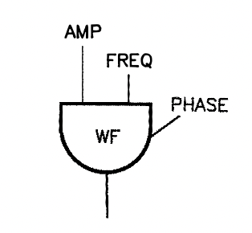
This is similar to analog synthesis, where an oscillator module with a sine wave generator will usually have a knob for frequency and amplitude (or gain).

Another programming language for sound synthesis that is still used today, SuperCollider, carries on the legacy of UGens. The line of code to produce a sine tone is this:
// Generates a sine tone.
{ SinOsc.ar(freq: 440.0, phase: 0.0, mul: 1.0) }.play;This is the breakdown:
SinOscis the name of the class..arspecifies that it will output at the audio rate.(freq: 440.0, phase: 0.0, mul: 1.0)are the parameters. It will have a frequency of 440 Hz, phase of 0, and amplitude of 1.0.{}.play;is to start the process. The curly brackets are necessary because by surrounding the SinOsc with them we are creating a function, which is needed by the.playmethod. 3
I just threw around many computer science terms, don’t worry if those don’t make sense at the moment.
In Max MSP, the term UGen is not used. Instead, they are called
objects, but underneath the surface of objects is essentially the same
as UGens, they have pre-defined instructions for the computer to
generate or process audio. The MSP objects have a tilde
(~). The tilde representing a signal, means that it is
calculating at the audio rate, just like in SuperCollider where
.ar is used. So if the audio rate is set to 44,100, that
means that it is calculating 44,100 values per second.

Note that for this purpose, phase does not effect the sound.
Signal Flowcharts
It is common to use a visual representation of signal flow to get an idea of how a digital audio instrument/effect is made.
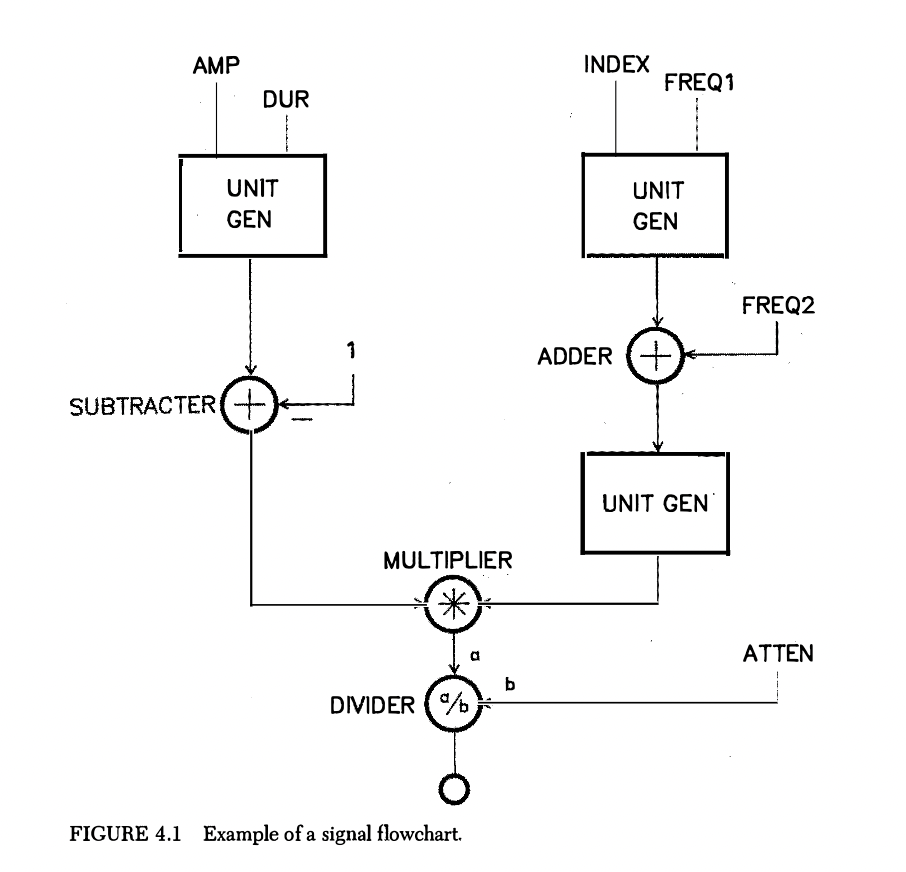
This figure is used to show what they could look
like, but everyone has their own preferences when drawing them. This one
from the book can be daunting as a first example. One might notice that
it’s somewhat similar to a Max patch. The MULTIPLIER (*) is
the same as the [*~] object in Max. This can be used to
control the amplitude of an audio signal. This is because by multiplying
the signal with a value higher than 1 we are performing
amplification, and if we are multiplying by a value between 0
and 1 we are performing attenuation. In this flowchart however,
the multiplier is used to modulate one UGen with another, often meaning
it is controlling the envelope of a sound. The book example is using a
DIVIDER (a/b), [/~] in Max, to control the
overall instrument amplitude, referring its function as attenuation with
the variable name ATTEN. The ADDER (+) is how to “sum” or
“mix” two signals together.
One more thing to note is that each UGen and mathematical operation has one or more inputs, ranging from variables, hardcoded values, or a signal (stream of numbers coming at the audio rate). Since Max is already a visual programming environment, it is already like a signal flowchart, but it is still good practice to draw these when thinking and sketching out ideas when not in front of the computer, or when branching out to other topics like analog electronics, modular synthesis, etc.
Here is a more minimal patch, a simple amplitude modulation in Max. Also note how the patch cables that are striped with green and black are the ones that are sending audio rate signals.
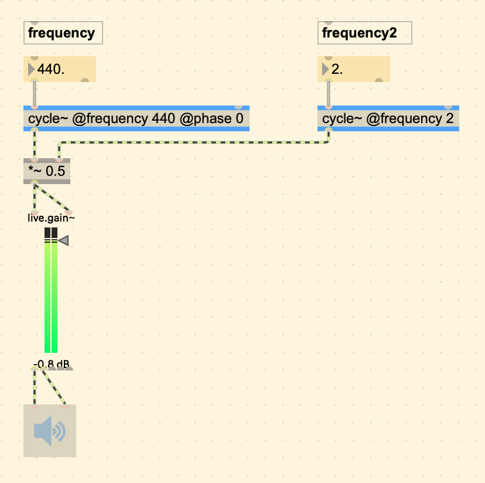
Wave Tables
One thing that is the same for all these programs when generating a
sine tone, regardless of old or new, is that they are using a
wave table. This is because this is the most efficient way
of doing it. Instead of creating a program that would calculate each
following value each time, it is much easier on the CPU to look up
pre-stored values of a single wave cycle that are in the computer’s
memory. A wave table is like an audio recording, or a block of samples,
where the program “plays” or goes through each sample and retrieves it,
except that in Wavetable Synthesis it automatically restarts
from the beginning when it reaches the end of the
cycle. Notice how the MSP object to produce a sine tone
is called [cycle~].
From the Max Documentation:
“The cycle~ object is an interpolating oscillator that reads repeatedly through one cycle of a waveform, using a wavetable of 512 samples. Its default waveform is one cycle of a cosine wave.”
Also in the documentation for the cycle~ object, are examples of how
to change the default wavetable. Wavetable data is stored in a buffer, and in Max
there exists a [buffer~] object where we can store anything
we want, including a single waveform to use for the cycle~ object.
To do this, we create a buffer object and specify a name to reference it, then specify the number of samples to be 512.
There are several ways to specify the sample size:
- Using an
[attrui]object to select “Size in Samples” from the dropdown menu. - Sending a “sizeinsamps 512” message using a message object.
- Hardcoding it when creating the buffer~ object. For example:
[buffer~ mybuffer @samps 512].
You can view the content in a buffer by using a
[waveform~] object and specifying the name of the buffer
you want to view.
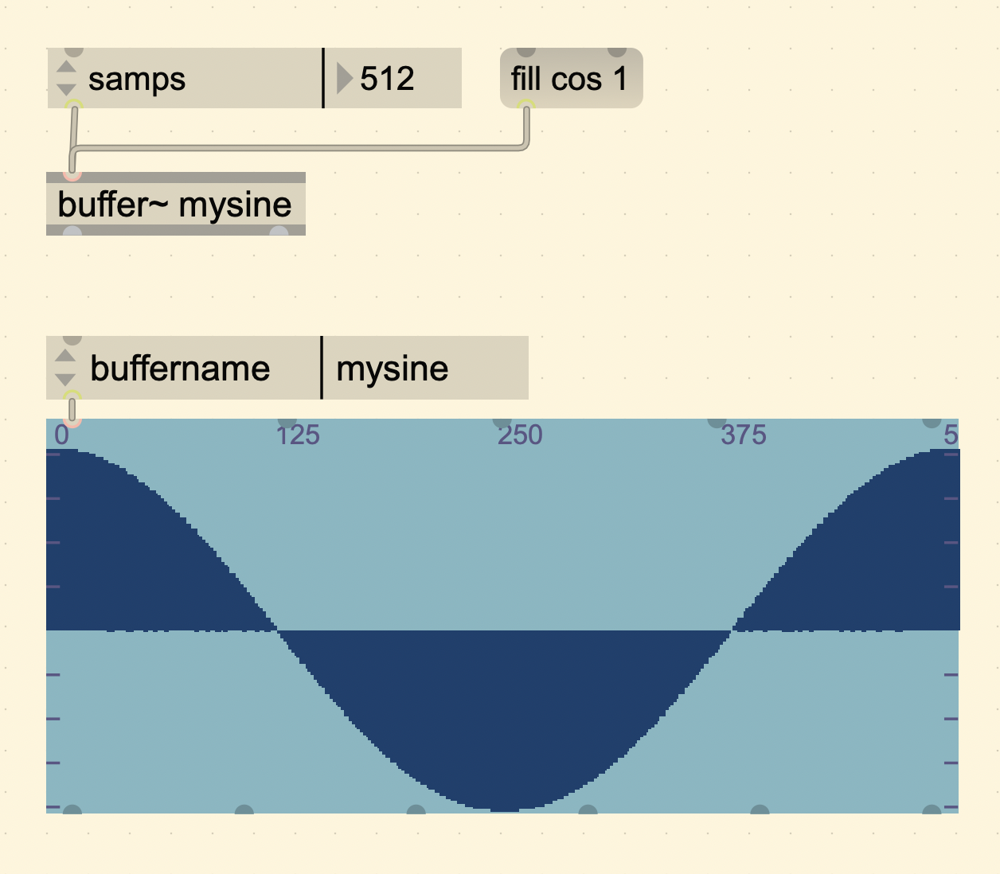
The example of a wavetable from the book uses a sine wave (starts at 0 instead of 1), but the sound is still the same. Note how in the following figure it also has a table for each individual sample value. For the sake of matching the book, we can use a sine wave in Max too.
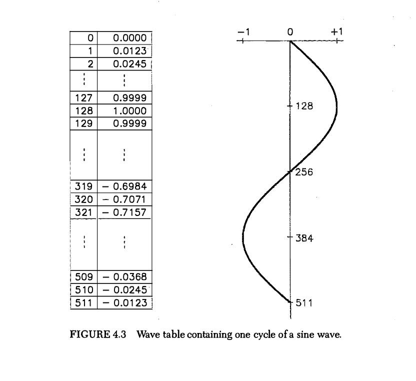
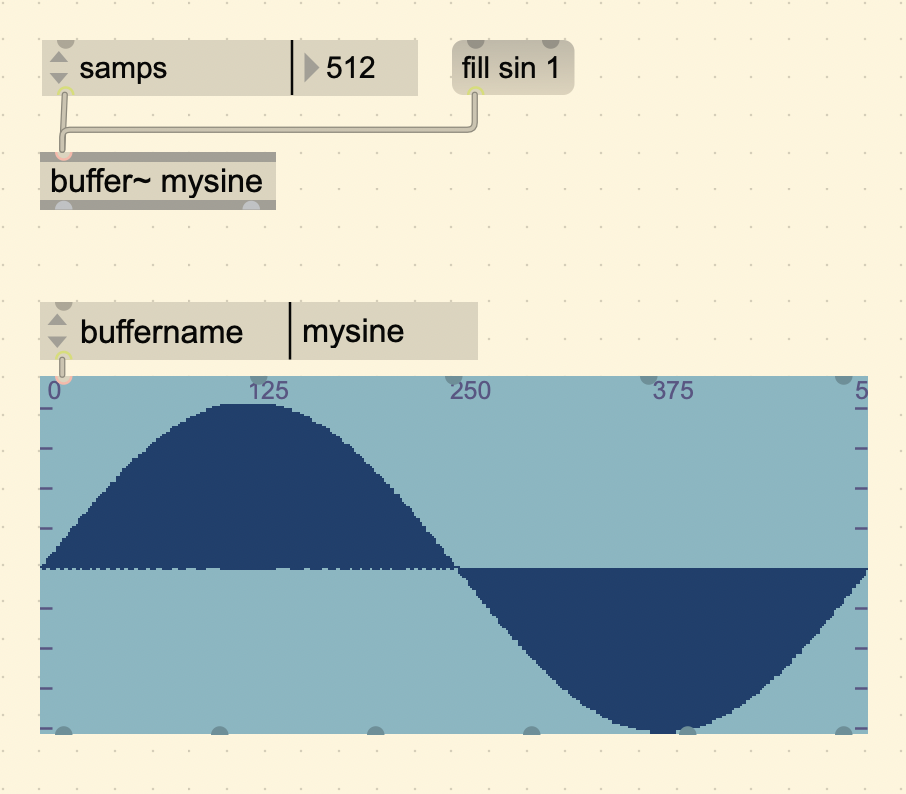
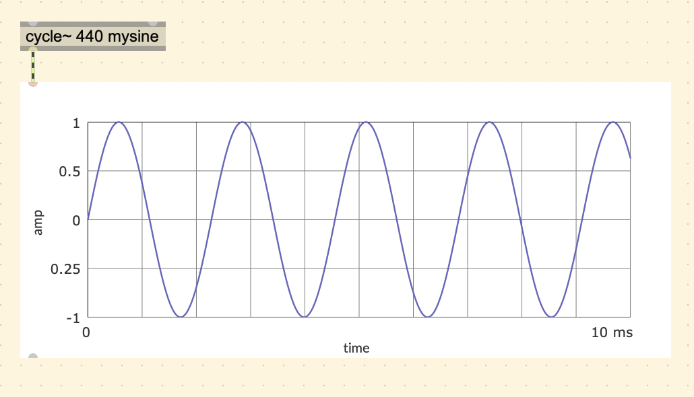
When changing the frequency of the cycle~ object, the computer considers the sampling rate and calculates how fast or slow it needs to go through the table to get that target frequency.
If we wanted to make a custom waveform, an easy way to do that is to
draw directly on the waveform~ object by setting it to “draw mode”. You
can change the mode by sending it a message (mode draw),
allowing you to draw the buffer content by clicking and holding the
mouse on the object.
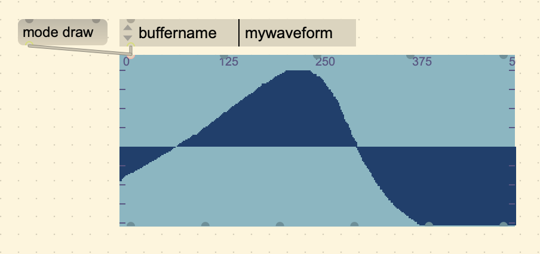
You can load this onto the cycle~ object like we did earlier, but if
you wanted the sound to update as soon as the buffer is updated, it is
better to use the [wave~] object, which is a variable size
wavetable. To play the sound using wave~, the process is a bit
different. Instead of specifying the frequency within the object or
through an inlet, we have to send it a buffer position (value between 0
- 1). To do this we use a [phasor~]. A phasor is a ramp
that goes from 0 and 1 periodically.
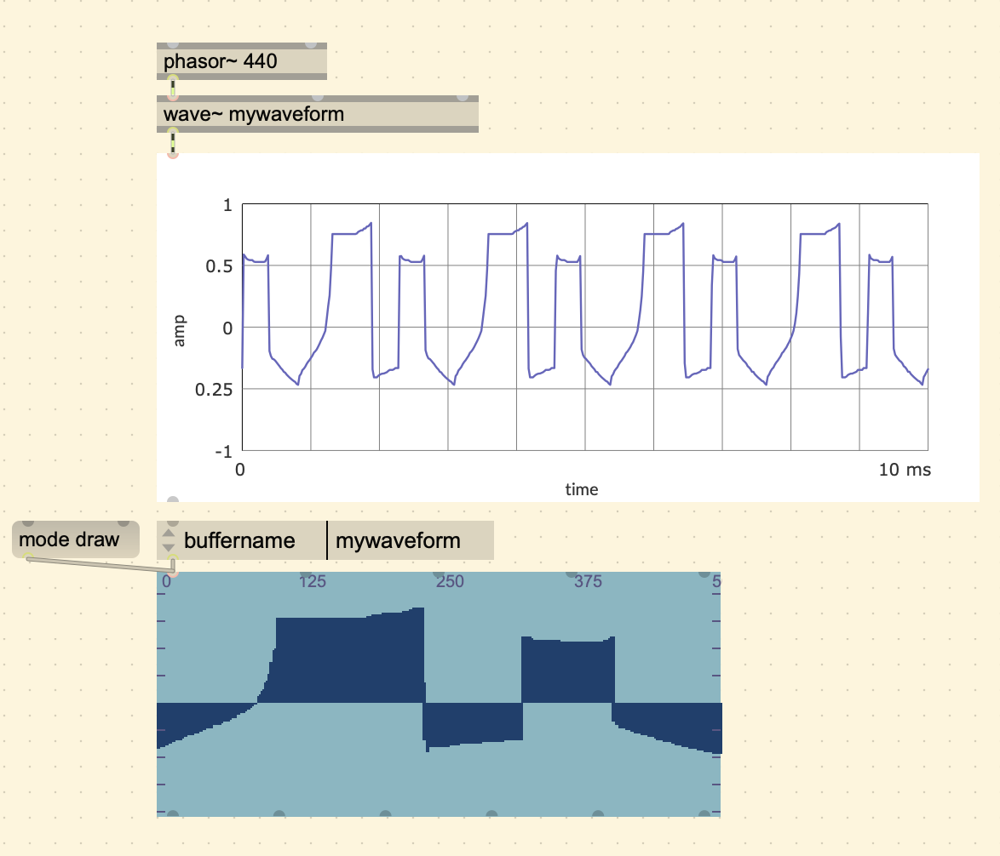
In the Max/MSP documentation called “Basics Tutorial 4”, it adds this insightful historical note:
“In the long ago days of MusicN synthesis, the phasor was the only unit generator that could produce a continuous tone. A phasor had to be connected to a wavetable to generate other waveforms.”
Wavetable Synthesis is a big topic. There are a lot of resources out there if you want to dig deeper. Here are a few that I found to be good supplements.
- Simon Hutchinson Video
- Building an Interporlating Wavetable Oscillator in Max
- Jan Wilczek - Audio Programmer Article
Aliasing
There is a problem that occurs when a waveform produces harmonics
past the Nyquist frequency. Consider a phasor~ with a
frequency of 3700 Hz running at the sampling rate of 44.1k. A phasor is
a sawtooth wave, and a saw wave has all harmonics that diminish in
direct proportion to the harmonic number, in other words, the 1st
harmonic (the fundamental) would be 3700 Hz at 1/1 amplitude, 2nd would
be 7400 Hz at 1/2 amplitude, 3rd would be 11,100 Hz at 1/3 amplitude,
and so on. So the 8th harmonic would be 29,600 Hz, which is past the
Nyquist frequency of 22,050 Hz. Compare this with a ramp with a lower
frequency of 1760 Hz.
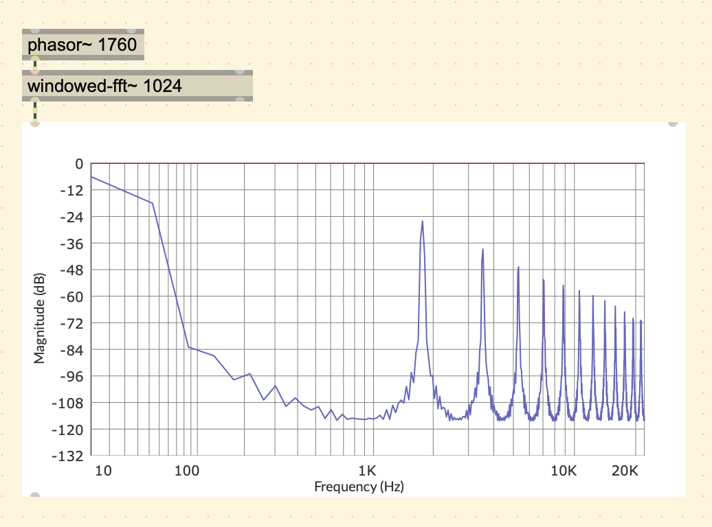
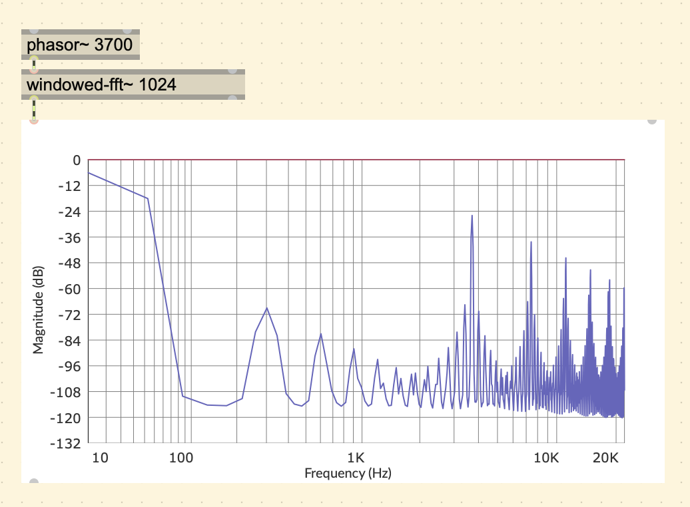
You can see in the 1st spectral plot, that the harmonics ramp down as you would expect, but in the 2nd plot, we get unexpected harmonics in places that don’t follow the pattern described above. This is because the harmonics that went past the Nyquist frequency fold back around into range. So the 8th harmonic of 29.6k, would fold over to 44,100 - 29,600 = 14,500 Hz, 9th harmonic would fold over to 44,100 - 33,300 = 10,800 Hz, and so on.
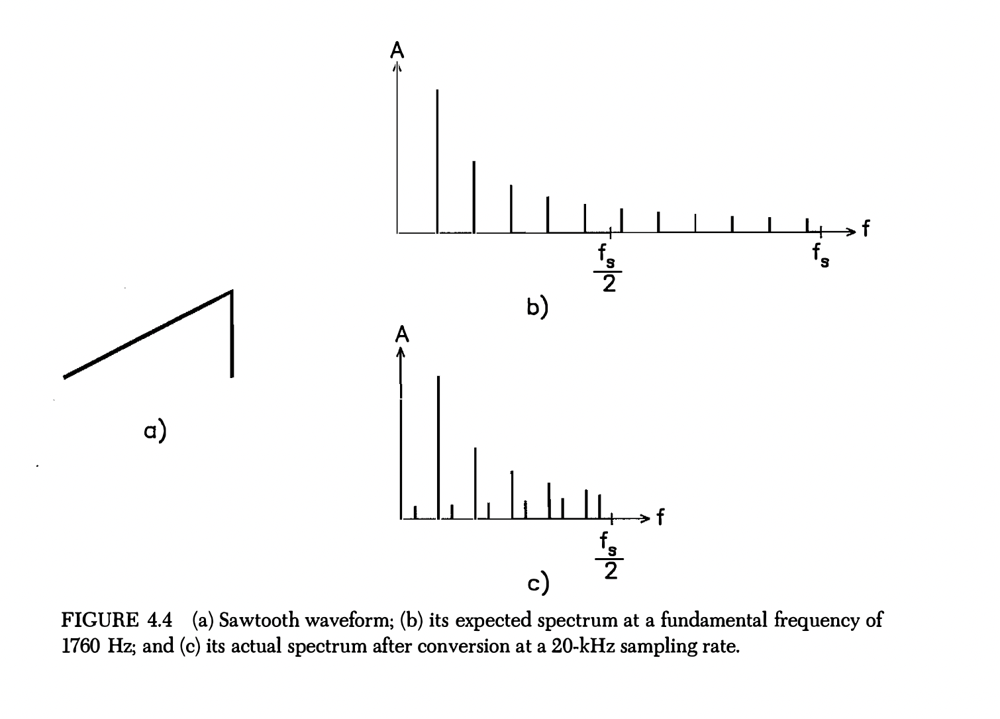
This results in a sound that does not sound completely harmonic.
Generating Functions of Time
The purpose of an envelope is to enclose a running waveform. Here is a simple envelope that has an attack (how the amplitude rises during the onset of the tone), a sustain (the amplitude of the tone during its steady state), and a decay (how the tone dies away).
Here there are at least four input parameters:
- rise time
- amplitude at peak of attack
- duration of the envelope
- decay time.
Also, the shapes of attack and decay segments need to be specified.
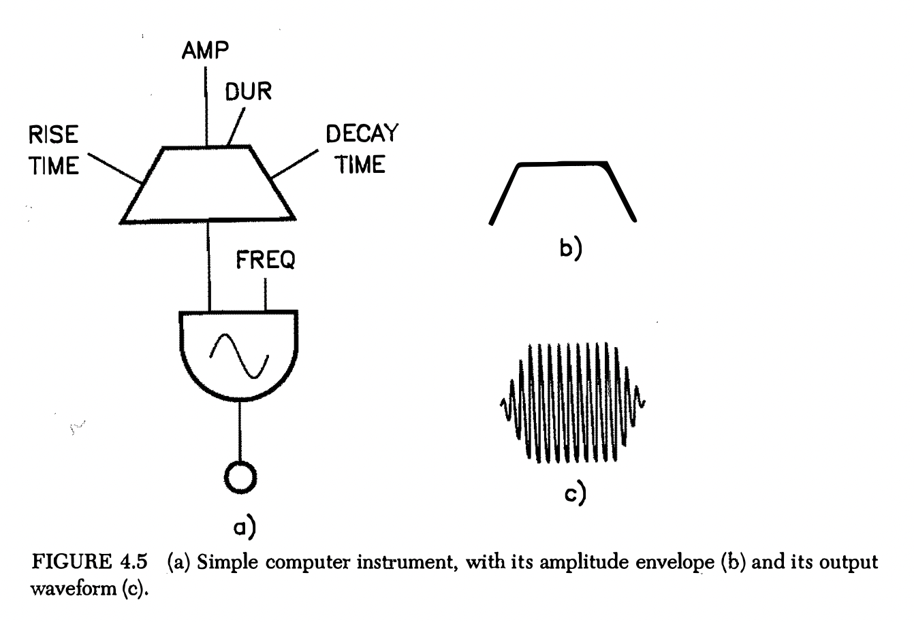
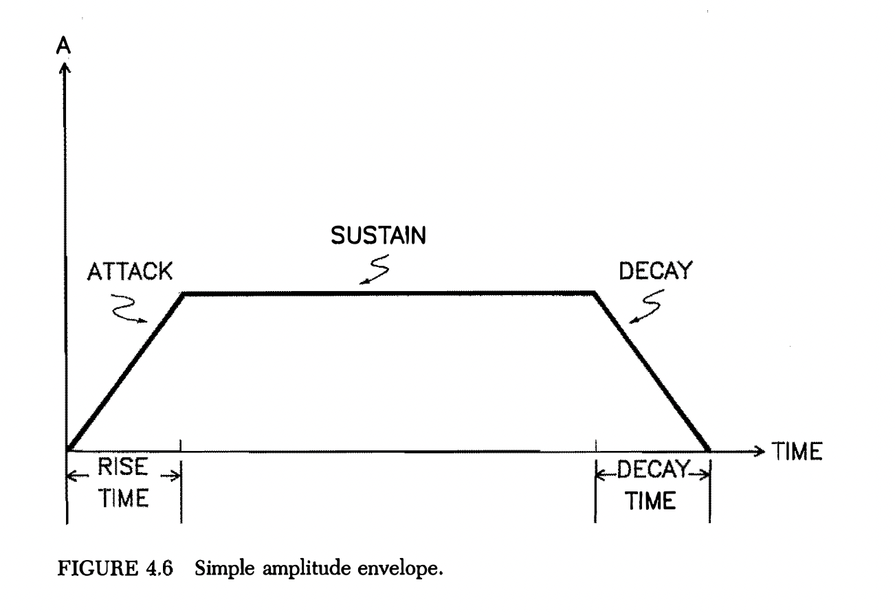
To create this envelope in Max, we can use a wavetable like shown
before, but instead I will introduce new Max objects like
[line~] and [curve~].
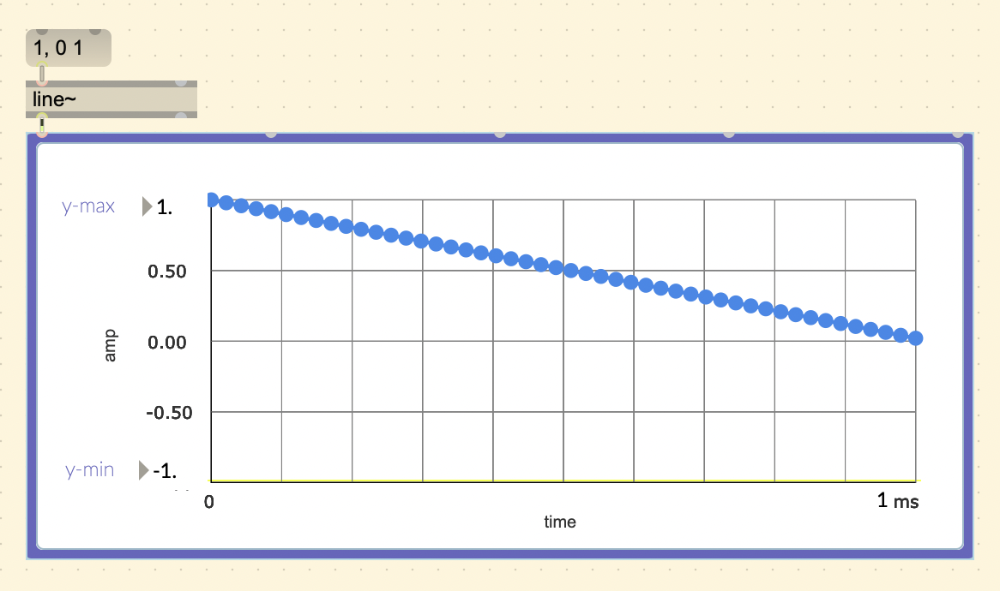
In several older programming languages, there existed a UGen called
“linen”. The more customizable object [curve~] has an extra
“curve parameter”, making it possible to also produce exponential
curves. Setting it higher than 0 will result in a convex curve, lower
than 0 will be concave, and 0 will be a linear ramp.
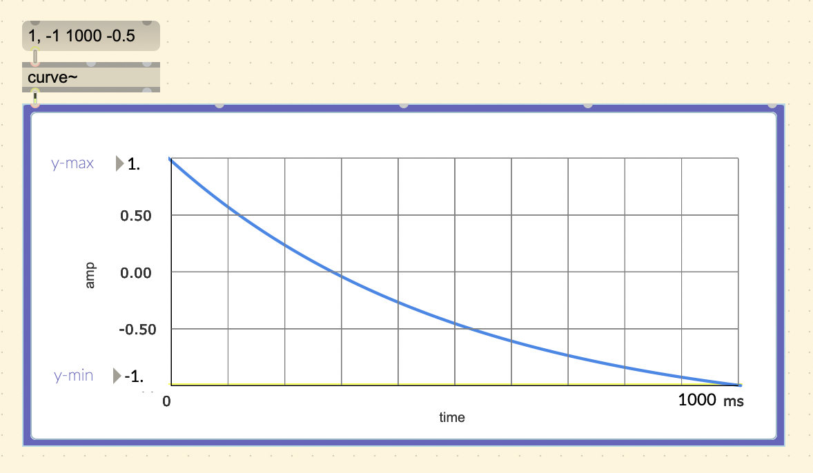
You can create the simple envelope by specifying a list of values in
the message object. The message starts with the starting value (0),
followed by a comma, and the list of values you want to go through in
sequence. For example, if I want an attack of 500ms, sustain of 1000ms,
and decay of 500ms, the message would be
(0, 1 500 1 1000 0 500).
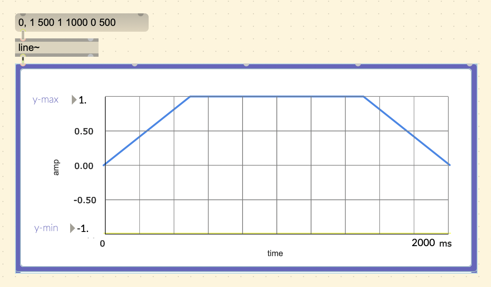
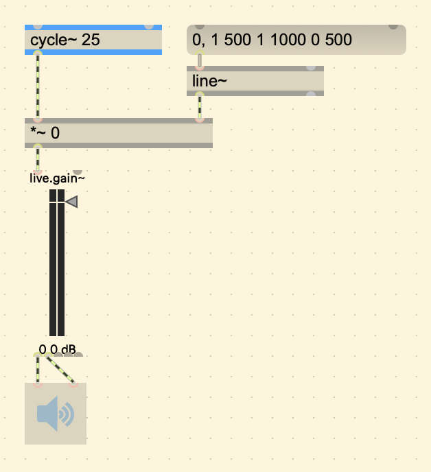
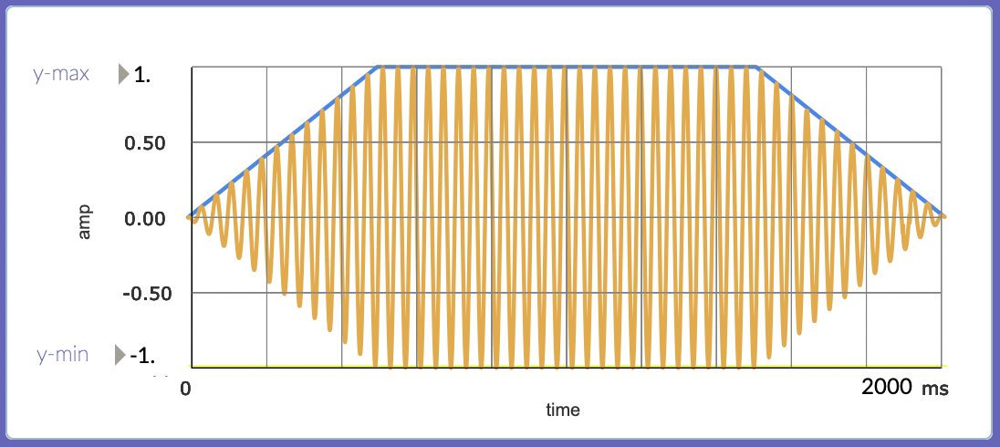
A more refined envelope is the ADSR envelope. From the book:
“The ADSR shape is an attempt to imitate the envelopes found in acoustic instruments. … Here, the tone remains in the sustained state until the key is released.”
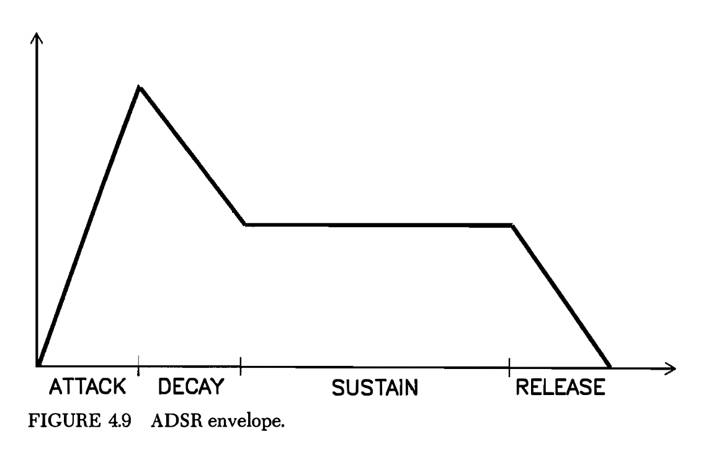
Max MSP does have an [adsr~] object.
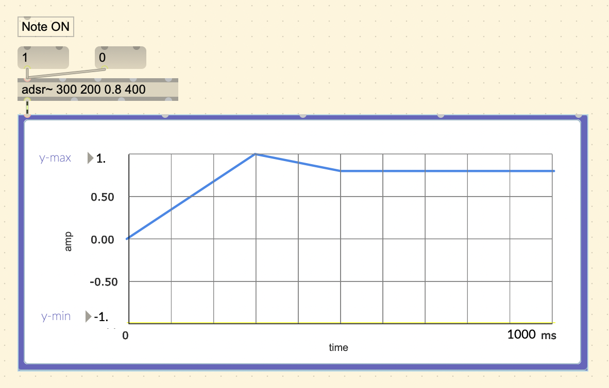
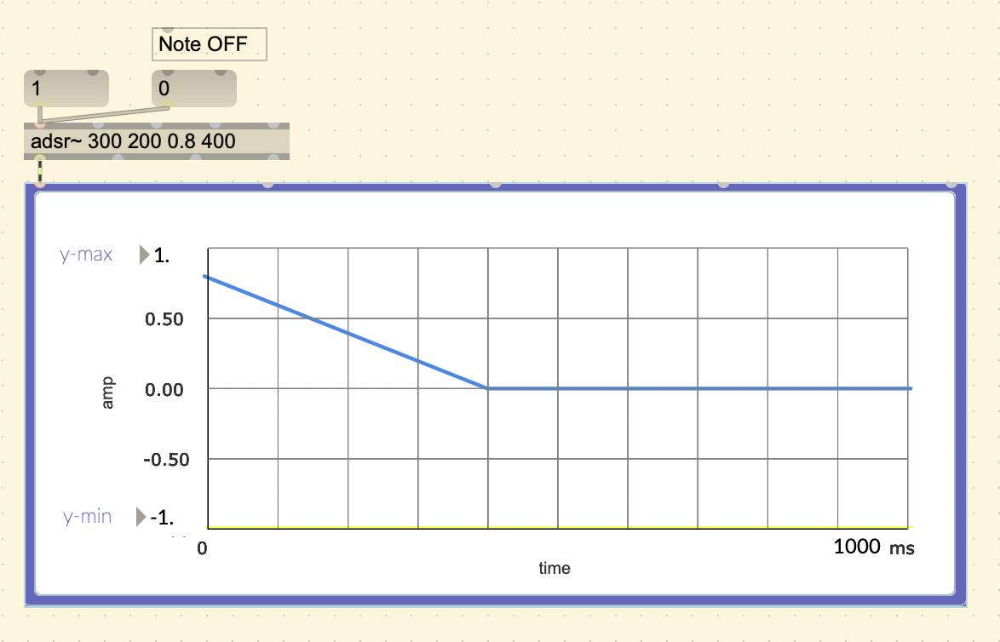
Another useful object is [function~]. It allows you to
draw points and shapes easily, and output it in a line~ or curve~ format
from the second to left outlet.
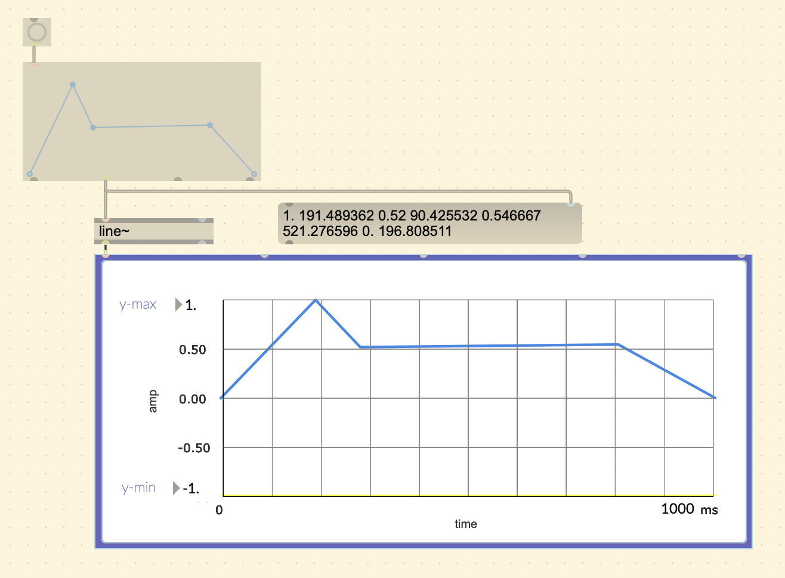
You can set it to curve mode by setting it on creation
([function @mode 1]), or by setting it on the inspector
menu under “Appearance”. The second to left outlet will now output in
curve~ format.
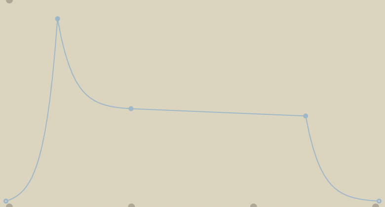
Knowing the extra flexibility of curve~ and its usefulness with sound, it just makes more sense to always use curve~ because it can do everything line~ can do and more.
The function also adds the ability to sustain on a single point position. You can set a sustain point with Cmd + double click. Sending a bang will initiate the function until it reaches a sustain point and will stay there until the “(next)” message is received.
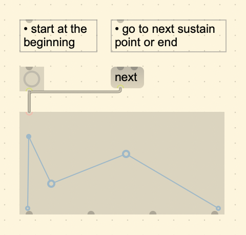
Additive Synthesis
A waveform at a constant frequency enclosed in an envelope is based on the Helmholtz model of musical sound. Helmholtz showed that the timbre of musical notes, and vowel sounds, are a result of their complex combination of many sounds. Just like white light is a combination of many colors, musical notes are composed of many different tones.
Helmholtz’s Apparatus for the Synthesis of Sound
This device created by Helmholtz around 1860 can be considered the very first sound synthesizer. It used tuning forks to generate a fundamental frequency and the first six overtones which may then be combined in varying proportions. By varying the combination of tones and their intensities, one can see how it affects the timbre of the overall sound.
.